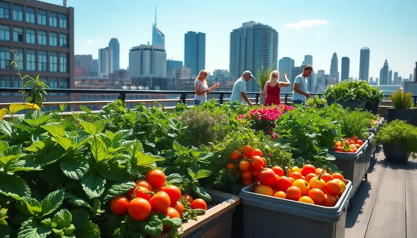

Los vecinos del barrio ya pueden disfrutar de un nuevo huerto urbano, un espacio comunitario donde cultivar sus propias verduras y hortalizas. La iniciativa, impulsada por una asociación vecinal, ha transformado un solar abandonado en una zona verde y activa.
El huerto cuenta con más de treinta parcelas que se repartirán entre las familias interesadas. Además, habrá talleres de agricultura ecológica y compostaje para niños y adultos, con el objetivo de fomentar hábitos de vida saludables y el respeto por el medio ambiente.
Los organizadores esperan que el proyecto sirva también para que se conozcan mejor los vecinos. «Queremos que sea un lugar de encuentro, no solo de cultivo», explicó uno de los responsables. La inscripción permanecerá abierta durante todo el mes.
Más información sobre las inscripciones y los talleres próximamente.